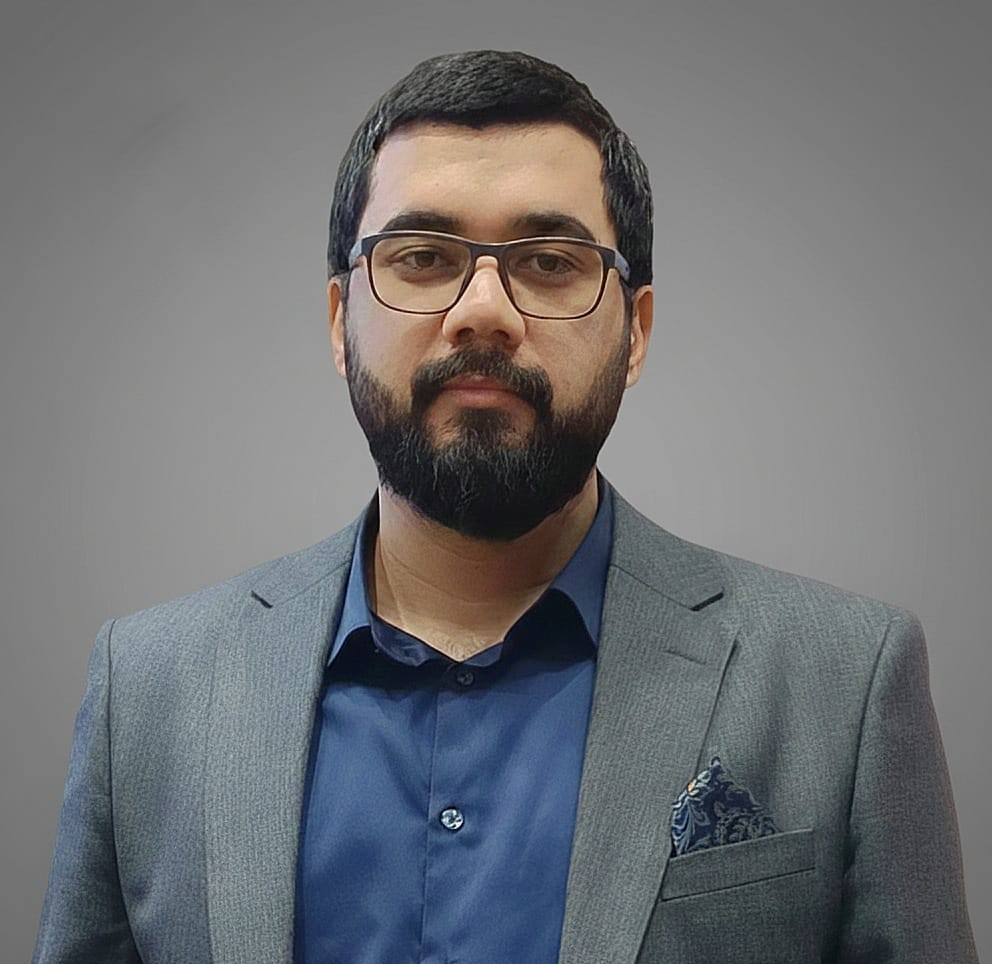

Cybersecurity Specialist
Mein Weg in die Welt der Cybersicherheit verlief vielleicht nicht direkt, aber diese Reise entsprang meinem tiefen Interesse am Schutz digitaler Infrastrukturen. Mein Bachelor-Abschluss in Wirtschaftswissenschaften und meine Erfahrungen im Banken- und Logistiksektor haben mir die Fähigkeit verliehen, komplexe Daten zu analysieren und in Krisenmomenten kühle Entscheidungen zu treffen.
Indem ich diese analytische Denkweise mit meinem technischen Fachwissen kombiniere, bin ich heute in der Lage, „Gefahrenspuren“ in Logdateien aufzuspüren, potenzielle Bedrohungen zu erkennen, bevor sie Schaden anrichten, und Incident-Response-Prozesse zu steuern.
My entry into the world of cybersecurity may not have been direct, but this journey was born out of a deep interest in protecting digital infrastructures. Completing my bachelor's degree in economics and gaining experience in the banking and logistics sectors provided me with the ability to analyze complex data and make calm decisions in moments of crisis.
By combining this analytical mindset with my technical expertise, I am now able to search for "threat traces" in log files, detect potential threats before they cause damage, and execute incident response processes.
Mənim kiber təhlükəsizlik dünyasına gəlişim bəlkə birbaşa olmayıb, lakin bu yolçuluq rəqəmsal infrastrukturu qorumaq üçün duyduğum dərin maraqdan doğub. Bakalavr təhsilimi iqtisadiyyat sahəsində tamamlamağım və bank-logistika sektorlarında qazandığım təcrübə mənə mürəkkəb dataları təhlil etmək və böhran anlarında soyuqqanlı qərarlar vermək bacarığı qazandırıb.
Hazırda bu analitik düşüncə tərzini texniki biliklərimlə birləşdirərək, loq faylları arasında "təhlükə izlərini" axtara, potensial təhdidləri hələ zərər vermədən aşkarlaya və insidentlərin idarə olunması proseslərini həyata keçirə bilirəm.